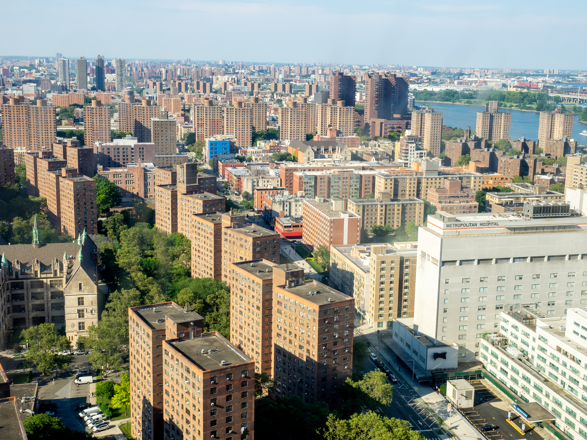
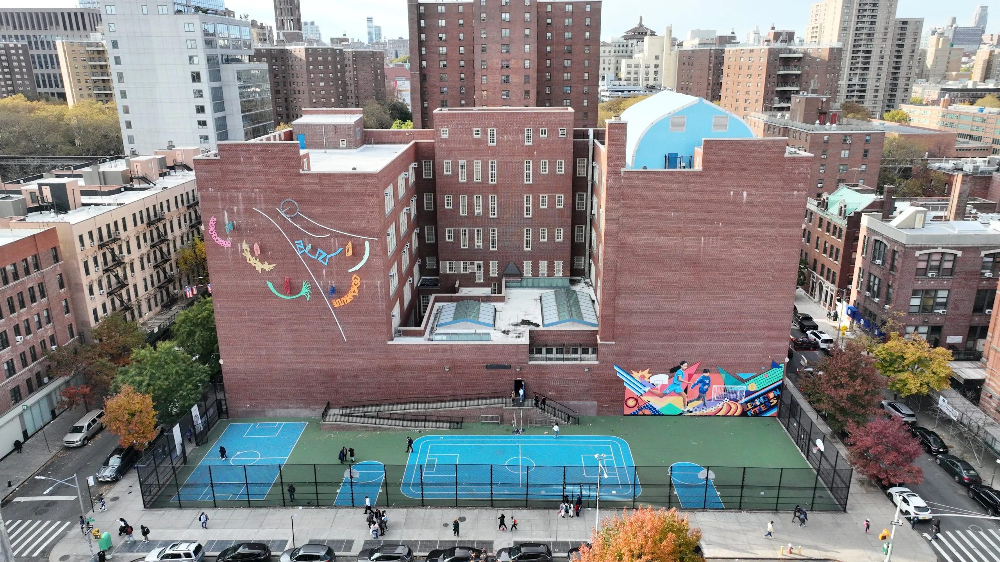
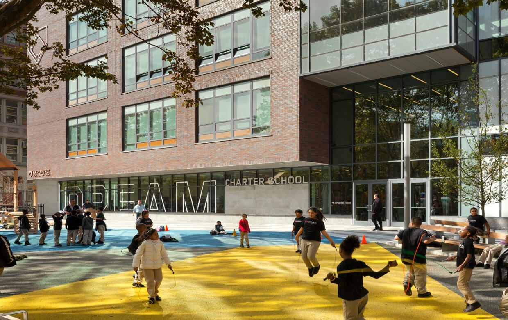
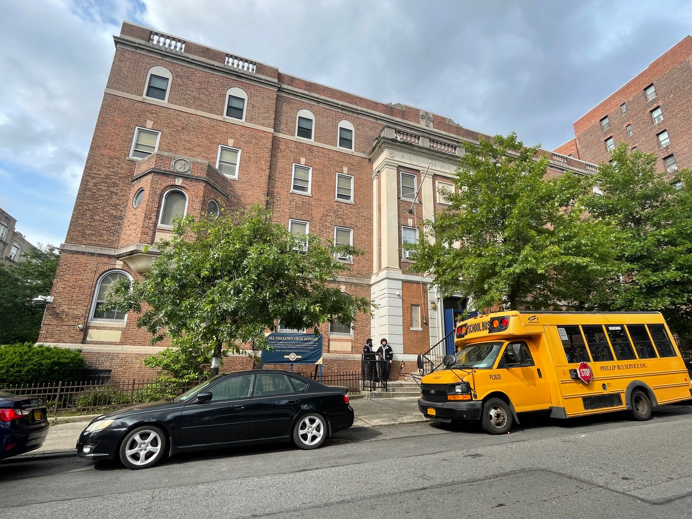
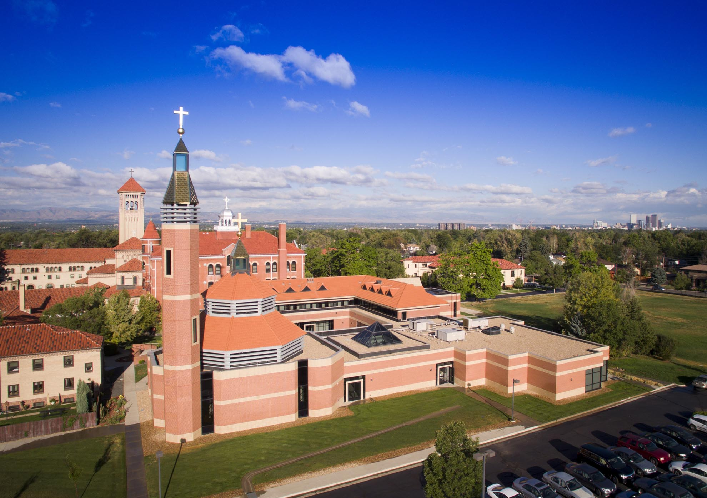
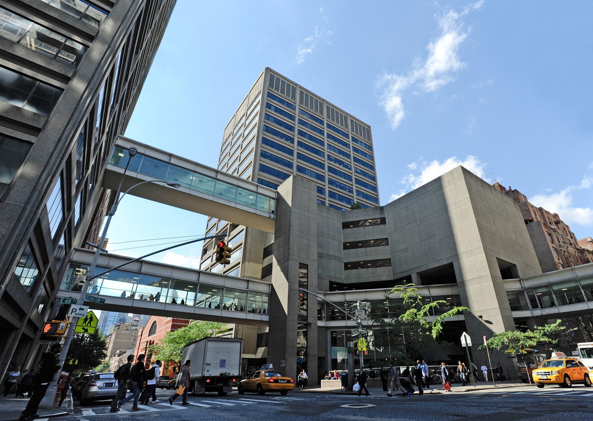

I am a Latino-American man originally from the beautifully diverse citadel of New York City, New York (that's in the Unted States!), which is called East Harlem, in Spanish, 'El Barrio' !
I was born on October 6th, 2002, to parents who have made their journeys immigrating from their homeland into the glorious city that never sleeps and where Capitalism has been running like freakin' crazy (yuk! down with Capitlaism!). My mother was born in Mexico and my father was born in Ecuador. They both got married in early 1994 and have given birth to 7 kids (including me! the middle child of course...). Even though they didn't have documentation or papers to confirm their citizenship (meaning no pay), they taught us that receiving education is important and it will help us find a career we can work in that pays good money. My dad sacrifices his life to do the best for us, even when his job requires a lot of physical labor.

Between 2007 and 2013, I attended PS. 72 Lexington Academy where my teachers cared a lot about me. They encouraged me to succeed not only in the education I received but in life in general. My two favorite teachers, Ms. Reyes and Ms. Soto, have been influential in my life to not give up in the challenges I faced intellectually and personally. Lexington Academy was where I learn how to engage in friendships and share our interests in the things we love, such as movies, shows, music and video games.
Oh the good old days...

Between 2013 and 2016, I attended DREAM Charter School. This is where my intesrest in the entertainment field began to grow, as well as my beginnings in writing stories!

After graduating from DREAM, I attended All Hallows High School, which was located in South Bronx, near Yankee Stadium! (it was sadly closed in 2025... RIP) It was a moment of change, which was hard since it meant time to change your childish ways into an grown adult. Frankly enough, it sparked my love in reading literature, inspiring me to enter into the world of creative writing! It was in that school I wanted to be a filmmaker to express creativity and messages through the power of art!

When COVID-19 hit between 2019 and 2020, I realized my life is short and there's no time to waste. I was orignally going to college to study history, but I decided to attend the seminary to discover God's calling in my life, seeing what vocation he is providing. So I packed my things and head off to the beautiful lands of Denver, CO! I stayed at the Redemptoris Mater Archdiocesan Missionary Seminary and studied at the St. John Vianney Theological Seminary in Philosophy and Theology, between 2020 and 2022. It was a great moment to grow as an adult and gain communication skills. I had lots of great time with the lovely people over there, as well as exploring to the West!

I came back to NYC after a few years of discernment, heading into Hunter College since January 2023, where I am now currently studying English in the concentration of Creative Writing and a minor in Media Studies!